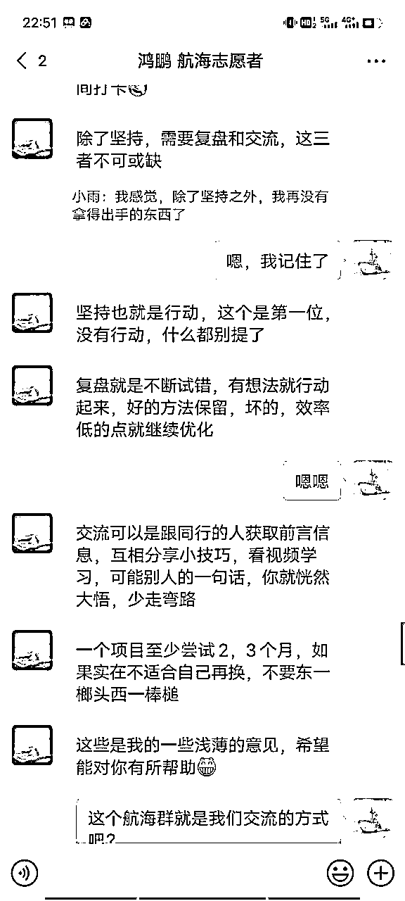

来源：https://er7flrttos.feishu.cn/docx/ExTediltCoy3bIxvw3AcsrZLnyg
全文12209字
阅读时间大概18min
在本文的结尾处，为大家浓缩了本文的总结，时间紧张的uu可以直接跳转至文末—高光时刻
大家好，我是小雨，车企国企测试工程师。我是别人口中的“学霸”，好学生的习惯使我在看到优秀的人之后否定自己现有的能力，因此常年焦虑。在搞钱女孩的分享下认识了生财，并二话不说直接加入。我没有很出色的成绩，但是慢慢见证了自己这接近3个月的一些变化。
希望给和我一样认为自己平凡普通/没有自信/自卑、没什么专业技能的伙伴们一点安慰
也希望给刚刚加入生财的新人伙伴们一点可参考的建议。
剪辑视频40条，1条视频播放量达70k，为我带来6个代理，充值金额7美金。21天全勤打卡，个人排行榜No.1。航海结束后还在保证每天剪辑1条视频的节奏。
我没有正常的tiktok账号，因此全部依赖教练帮助代发视频。总体而言，项目算是跑通。
很普通的结果，在这条船上应该是倒数了。所以今天作为航海收获的分享者，记录一下航海中遇到的问题以及解决方法，也算是对这次航海的复盘。
方法可能并不适用于所有人，重要的是航海前后的心态转变，希望此分享可以贯彻落实“利他”的初衷
前摇比较长，为节省大家时间，可自行选择到第五部分开始阅读
仗着年轻、刚毕业，什么动作似乎都可以被理解。
但是想到随着时间的推移，需要承担的责任越来越多，新手保护期总有结束的一天，我还是会担心自己的未来。近两年车企越来越卷，集团的收益也在下滑，上层也公开表明需要裁员1%。
虽然这些对应届生来说似乎很遥远，但总有一天会轮到我。
于是，搞钱女孩背书，我开启我的生财之旅。
获得3天体验卡后，并没有加入的想法，只是抱着捡便宜的心态，趁可以免费观看的时候多看，然后发现根本看不完，光是一个项目的航海手册就要看一天时间。
为了能继续看生财的内容，我加入了生财，仿佛心里的一块石头也放下了
我的第一个付费社群，我以后也是生财人了，可以享受知识的洗礼了
现在觉得当时也挺拼的，为了薅羊毛真是想尽各种方法。
利用碎片化的时间固然是好的，但是要使用合理的方法，比如边走路边看手机，我是看不进去什么内容的，还头晕，影响上班的工作质量。
精华帖、航海手册、风向标，我开始没有方向地一股脑地看。
精华帖是大佬们的成功经历，是我当下触及不到的高度，光是标题就足以让我望而却步，好强好胜心理让我越看越焦虑，开始抱怨自己为什么选了这么个专业，进了这么个行业，只给别人交付，却无法自己创造价值。
为什么我这么一事无成，为什么大家都比我强？
第一次脑子一热产生的想法：
还没有经过亦仁筛选的风向标内容参差不齐，而且更新速度很快，刷风向标的速度赶不上更新速度，看到什么自认为好的点子就想马上干起来。
当时刷到的自己觉得可以做的内容：老人穿脱袜神器、打印春联。甚至想直接在pdd下单，周末拿到街上卖，但是冷静思考一下：
于是我的第一次做生意的主意打消了，但是我觉得自己脑子里多少有了点发现用户需求的思想。
第二次脑子一热产生的想法：
广州城中村的窗户都是单层的，就算贴了防风条还是会漏风，冬天睡觉时风从脸上吹过，凉飕飕的，于是我想到一款盖住脖子和额头的枕巾，上网查了查，没有这东西！于是开始问鱼丸下一步的做法。
这个过程我还是挺执着的，甚至自己画了产品图，写了产品介绍。

不过纪钟老师的话一针见血：
想做一个产品，先看看市场上有没有，先模仿，别觉得自己是天才，可以创造产品。
后来想了想，睡帽就可以解决的问题，何必要个花里胡哨的枕巾，不易清洁。
这两次脑子一热而产生的想法，像做了场梦一样消失了，觉得自己果然不是赚钱的这块料。
航海手册偏实战，我看了12月航海手册的公众号爆文、小红书境外游、抖音教育直播和闲鱼二手书。
看是看懂了，就差一步：实操。
早有耳闻航海出了很多拿到结果的，所以心中对航海的印象就是很神圣的，只要上了船，一定会赚到钱。
所以从2月开始我就期待着航海，心想：只要航海了，我就有救了，我就能赚到钱了。
于是整个2月~3月初，我全都是抱着焦虑的心态，期间看到了几篇精华帖，有跟着做，比如快手的本地团购生活云剪视频、支付宝直播、快手数字人视频带货、微信视频号涨粉、短剧cps等，坚持最久的也就一个月，最后全部放弃。
于是我对航海的期望更高了。
12月航海手册中，我对小红书旅游比较感兴趣，打算在下次航海报名
航海标题公布后，我对中老年知识付费和闲鱼高客单比较对眼缘，打算报名其中一项。
航海项目介绍过了几天也更新了，我第一时间看的就是项目的门槛和适用人群。
不怕大家笑话，知识付费需要转化到私域，我不善经营自己的朋友圈，所以放弃报名
闲鱼高客单没有过多的介绍，我认为怎么会有高客单还不需要什么门槛的项目，以及售后涉及退货，所以也没敢报名。
偏偏我看到了tiktok短剧，想到之前看了3遍8月短剧cps的航海手册，却以手册内容具有时效性为理由，没有实践一次，肯定是后悔的。
没想到3月航海重新出现，甚至不需要海外账号，只需要剪辑视频就可以，每天投入的时间也可以接受，而且限制人数，我觉得算是我可以hold住的门槛，于是报名了。
以上内容只是想表明，想是一回事，做是另一回事，在现实到来之前，想再多还没发生的事是无意义的，除非你开始做。
这次是真的要航海了
我重新把短剧cps的手册很认真地看了2遍，包括其中链接到的其他文档也一并看了，这次基本了解了短剧cps的变现逻辑。
航海预热文档贴出了目前tk平台上比较热门的短视频以及短视频账号，我一并保存了下来，准备全部看一遍，后来也只是看了不到一半的内容。
我很期待航海，也心惊胆战：
我可以上岸吧？
我可以变现吧？
这次的航海手册会跟8月的手册内容有什么不同吗？
......
开船前一天，船员们在群里挨个自我介绍，名字后缀全是lv5+，甚至还有lv10。
年龄比我大的，有自己所专注的领域和资源；年龄比我小的，也早早取得了成绩。大家都有自己可以提供的资源和需求的目标。
只有我，没有拿得出手的技能，一瓶子不满半瓶子咣当，成就什么的完全啃老本，于是也羞于开口。
当时的感觉就是一种压抑和无奈：
还没开始起跑，我已经输在了起跑线上。
自己压根就是如空气般的存在，没脸自我介绍，但觉得总得说点什么，就硬着头皮发了。
发完自我介绍，我久久不能平静。又把8月的航海手册看了一遍，我一定保证自己不掉队。
在写下这条内容的时候，我重新翻看了当时群里的聊天记录，发现那时教练们对海外短剧的赛道的解说以及对船员们提问问题的解答已经是很详尽且一针见血的了。
在这里也要承认当时自己眼高手低，消息过眼不过脑，看完就忘。
开通网盘超级会员，所有官方剧源下载完毕，午休结束后第一件事就是眯缝着睡眼看刚公布的航海手册，不到10分钟看完。
为什么第一天就看完手册了，因为里面有50%的内容在8月航海手册中出现过。
当时的我觉得这次的手册内容没有8月份的全面，心想
就这？国外短剧这么简单？
我不相信自己的眼睛，又把手册看了一遍，确实没看错。
（航海过程才知道，是国内外短剧剪辑逻辑不同，国内短剧大部分时长10min以上，而国外短剧大部分2min左右）
带着对手册内容的疑问，我在第一场直播中努力跟上节奏，积极回答教练提出的问题，想要争得教练口中的福利，但是回答的不是很准确，于是与其失之交臂。
当时不理解教练所说的千粉链接福利是什么意思，现在了解了tk变现路径后才知道，这个福利对小白来说是很有利的。
虽然没有抢到福利，但是后来的几次直播课我都积极的回答问题，想抓住一切能中奖的机会。
事实证明，普通人还是好好剪视频吧。
第一次直播结束后开始动手操作，才发现原来并不是想象中的那么轻而易举，而白天的我还对航海手册挑三拣四。
实际上第一步：选剧，就花费了我十几分钟。
根据标题找对标视频，觉得这部剧还过得去之后才开始构思剪辑。
那天晚上我剪了2个小时都还没有剪完，决定先睡觉，第二天下班继续剪辑。
当我发现有船员在当天凌晨1点多终于提交了自己的第一条视频后，我又心生愧疚
大家真的很重视航海，我肯定比不过他们，加上没有抢到福利这个遗憾
下船的念头开始萌芽。
前期的心理斗争存留的程度是最高的，因为有机会返回并下船，但一向口嫌体直的我还是开始剪辑了。
大家在航海群内各种举手，很多我想都没想过的问题被大家问了个遍，不禁给大家竖个大拇指，很细致，真的很佩服他们。
看到大家的日志打卡，我的想法
fine，大家热情都很高，我也不能输
为了快速看到成果，每天下班后铆足劲剪辑3~4小时视频，抛弃原有作息，成为熬夜党，体重上涨，第二天工作效率受到影响。
对于挑剧、剪辑这一系列的动作还是没有很熟悉。
看到群里的大家都有问题可问，而自己却不知道自己的问题出在哪里，我一直感觉自己在持续掉队中，还出现一种自己的打开方式和其他人不一样的错觉（不然为什么大家的进度这么快）
随着剪辑动作的熟练，我开始发现剪辑中存在的一些问题：
于是我开始有针对性地在群里提问，有时教练在忙没有回消息的时候，我会认为自己问的问题很蠢。
但是令我意外的是，有几位船员很热心的回答了我的问题，一针见血，字里行间表达的意思足以让我明白自己提问问题的原因所在，也让我感觉到，自己确确实实是群里的一员，我提出的问题真的有热心且懂的人解答。
刚开始的数据一直是不过千播也不违规的，我以为是时间的问题，只要继续剪辑总会看到结果。
期间的另外几场直播，教练带我们看了数据较好的千播视频，我按照教练所说的剪辑套路
丝滑转场、attention、冲突对话浓缩、冲突动作语气、一定擦边、悬念结尾、原声bgm相结合等
对自己的视频进行了修改，每天兢兢业业地每天剪辑2条视频，但依然没有千播。
与此同时，其他船员开始陆续公布自己的好消息，收代理、变现，也有船员受邀进行剪辑方法的分享。
我内心很不服
你说的这些我也会操作，要我分享我也行
实际上，有资格分享的人就是有结果并且是在众人中拿到结果较快的，这一点我们需要承认，并且要谦虚地向他们请教。
内心毫无波澜之后，复盘对我的意义微乎甚微，依靠每天的剪辑动作来提高自己的熟练度，而脑子完全是停滞的状态。
与此同时，我开始思考航海的意义
我决定恢复原有作息，不再把剪辑、看数据反馈作为短期目标，而是将其作为下班后的习惯性动作。
清明假期我没有出门玩，而是每天在家里剪辑，平均每天4条，是为了接下来一周的工作日可以每天少剪一条视频，但是依旧保证每天2条视频的提交量
但是需要承认的是，打卡在一定程度上会帮助我进行当天剪辑动作的复盘：好的情况下，我还会对需要改进的地方进行思考和时间。
我的打卡内容一般是：
一天中的一些小快乐，可以来自对剪映一些功能的发现和使用。
于是我发现，
当专注于自己的事情后，其他人拿到的成果已经与我无关。
有人下船了，有人举一反三地运营自己的账号，取得成果的人越来越多了，分水岭开始
虽然内心毫无波澜甚至心灰意冷，但是我的剪辑动作没有停止过。
我的打卡排名越来越靠前，但是我的想法是：
大家应该都在闷声赚大钱吧，数据好到没空来打卡了
常年学霸的好胜心再次出现，激起了我的竞争欲：
我看看这个No.1能不能一直保持到航海结束
于是我每天的关注点又多了一个：打卡排名
大家不要学我，因为
人的精力是有限的，关注的东西越多，越会分散自己的注意力，到最后可能会混淆自己认为最重要的事到底是什么。
有天我在tk上搜自己的作品，想看看数据有没有发生变化，结果发现一周前发的一条视频播放量达到了39.5k。
确认过确实是自己的作品后，我登录代理系统，代理由0变成了4个。
内心也很激动，剪辑路上终于有了一点小小的水花，但是和别人相比还是差太远太远。
有了正反馈之后，我没有再像之前那样满心抱怨或者心灰意冷，也知道这个项目确实有变现的机会。
于是就这样，21天的航海最终靠岸。
以下内容是在实操过程中遇到的具体技术问题，与心态无关，可选择性查看
教练提供了官方剧源和高分剧源两类，我拿到表格的时候只看到了sheet1中的官方剧源，没有针对性地全部保存到了网盘中。
网剧有男频和女频之分，我确定了女频的赛道，却没考虑在第一步保存剧源到网盘的时候就应该对剧源做一次筛选，导致后面我又根据英文介绍来模糊地判断这部剧的归属类别，以及主要讲的内容
直到有船员在群里提问剧源的时候，我才发现还有sheet2的高分剧源（国内，可找到对标的）。
对于只需要剪两三条视频就可以结束的短剧，没必要下载整部剧，只需要在国内短视频平台上下载现成的爆款视频，去水印、裁剪片段、去重即可。
官方剧源都是英文标题，根据翻译结果在国内短视频平台进行搜索，大部分是搜不到的。由于对标视频不容易找到，导致对于剧情的了解只能通过一集一集地看，后面我只剪了2部官方剧源。
国外短剧剪辑成品大概2-3分钟，国内短视频平台上的爆款作品大都是10-20分钟，少有7-8分钟的视频，我开始疑问，国内外爆款视频时长就不一样，我怎么继续对标？仅因为视频时长不一致的问题，我对爆款视频的用法从手册里要求的对标，变成我了解某一部短剧的一个方法。
高分剧源分3S、2S、S、A、B等级，当时不知道字母代表的意思，只是按照顺序一部一部地搜索短剧，凭自己的感受判断这个剧能不能剪。
也是船员的提问，教练解答后我才知道S级的剧最值得剪。在选剧这方面也是浪费了一天的时间。
为了节省时间，在工作期间午休时间过剧情，剧情点纯靠脑子记忆，或者只记录自认为好的集数而不做过多说明。
殊不知剪辑需要多集数混剪，导致真正开始剪辑的时候需要重新看剧情，且剪辑节奏跟着剧情走，脑子里没有自己的想法。下面是我初期过剧情的记录，真的很呆
现在才发现自己的问题：单打独斗，闭门造车，钻牛角尖。
剪辑的具体问题可以举手提问，却从没想过选剧这第一步也可以提问。
重新导入翻译好的字幕后，临时发现需要增加新的片段，导致需要重新识别、翻译、导入字幕，要么就是手工添加字幕
建立好复合片段并制作完成蒙版后，发现零碎片段中的某个细节剪的不好、单个片段未完全剪辑、需要补充转场镜像等去重方法的情况，导致需要重新解除复合片段、再次修改单个片段、重新建立复合片段、重新制作蒙版
没有提前规划好要剪辑视频的风格、剧源，先把很多集扔到主轨中，凭感觉进行大量删减，导致留下来的剧情无法形成连贯的内容，剪辑过程中又发现某一片段不合适，重新对片段进行选择、排列、剪辑，有时甚至自己都提炼不出这条视频要表达的主旨（发生了什么，主角是谁，为什么凭空插入了这么一个片段......）
制作完成后自作聪明地锁定了轨道，在后期剪辑过程中需要对片段进行倍速、更换顺序的时候，英文字幕没有随之变化，导致整个视频一团乱，需要手动对齐说话的内容和时间点
片段翻译好英文字幕后发现该片段不合适而删掉该片段
解说类视频的解说字幕（前期手动添加）和识别到的中文字幕大小不一致
“哪怕做了很多的去重动作，如果重复使用一套相同的去重模板，平台也会和你之前发布的作品进行查重。”
这是有船员在被检测出查重后进行的提问，教练所作出的回答。
看到这里我浑身起鸡皮疙瘩，因为我主要也是依靠去重模板，只不过会在不同视频中使用不同模板，但是参数没有改变。
挑剧就像选妃，居高临下，眼花缭乱，所以心里明确一点：我就是要选冲突多的剧/甜剧/有现成钩子的剧
先在抖音平台上搜索对应剧源，通过长视频（18min左右）来大致了解这个剧主要讲的内容，通过中视频（7min左右）来了解这部剧的冲突剧情所在点
有时单凭抖音上的中长视频就能感觉到这部剧不适合我：
有时哪怕是标明的S级或者A级剧，也不排除它是一部烂剧的可能（仅对我而言）
选个安静并完整的时间，在剪视频的过程中记录自己的剪辑步骤。放在一旁，后续两次剪辑的时候边看手顺边操作。操作熟练后可以抛掉手顺自己剪辑。（写的很粗糙，见谅）
主要是：
解说类视频，先把解说内容朗读出来，让英文解说和中文对话一起被识别，可以解决解说字幕和对话字幕大小不一的问题
确认主轨片段不需要再进行其他更改后，再锁定文字，最后建立复合片段，进行蒙版遮挡中文字幕
拿到剧，先过剧情，并写下每一集讲的内容，除非很没有营养的集数可以略过。有条件的话，在过剧情的时候把前后呼应的集数做好备注。下面是我最近剪的几部剧的备注，还有一部剧的讲解文件被我清空回收站了
剪辑没有框架的问题无法避免，对此，我尽量做到视频保持一个中心思想，该甜的甜，该反转的反转。
短剧即便在制作过程中出现一些剧情连贯性、转场方面的瑕疵，也不影响观众观看。所以当我们以观众视角观看短剧的时候，很容易被剧情带跑偏（明明上一秒在讲A，怎么就突然转到B了），所以要尽量跳脱出观众的视角，以俯视视角客观观看、评价剧情，筛选好剧。
教练回答完其他船员的问题后，“去重”这跟弦就一直在我脑子里绷着了。
我们不能仅依靠副轨的去重模板，还要在主轨原片进行操作，或是每次剪辑使用不同的模板，更改不同的参数。每剪一条视频，我都有意识地更改模板里的参数，或者其他动作
挺不专业的，见笑，有经验的前辈一定要来指点一下
之前都用手机剪映，光是看到电脑端剪辑工具里的一条条轨道就会让我密集恐惧症上身。
事实证明，万事开头难，上手做了之后才发现，电脑版剪映没有自己想的那么复杂（但是没接触过PR，PR是不是也很简单就另当别论了）
克服自己的心理障碍，迈出第一步，自然会不自觉地迈出第二步第三步，只要想干，惯性使然，就会继续走下去。
还没参加过航海的圈友 ，或者航海没有拿到很大结果的圈友，可能会把航海当成发财致富的救命稻草，并认为
只要我参加航海了，我就能赚钱了
我等航海开始再做，现在先不急着做
刚开始我也是这种心态
看了那么多航海手册，却从来没有动手做过，浪费了前面一个月傻等的时间
进而，当看到其他圈友在入局的时候就已经有备而来，才会倍感焦虑、被卷到等等。
抱着靠航海致富的心态，我珍惜航海的每一天。
随时间推移，没有拿到结果而产生的焦虑越来越强烈，与其他船员的横向对比心理也愈演愈烈。
这会导致极大的内耗，而这种结果的原因完全是因为自己前期的懒惰。
航海并没有我们想象的那么神奇，可以帮我们一夜/21天暴富。
它是让我们获得快速正反馈的一块敲门砖，让我们跑通MVP，并确定这个项目当下来说确实可行，有赚钱的机会，从而激励我们对自己产生自信，或锻炼我们的意志力等等。
在航海的过程中保持与其他圈友、志愿者以及教练们的链接，收获到的可能不只是金钱，而是一种更高角度的视角和更宽领域的认知。
焦虑的反义词是具体
仔细思考焦虑的原因，可能是因为对一件事考虑的太长远，以及当下自己并没有着手去做这件事，以及，看到了别人拿到结果后那光鲜的一面。
当我们忙起来的时候，其实是没空焦虑的，具体来说，是没空去管别人在干什么的。
但是要确保我们和其他船员们保持链接或沟通的前提下，不能像我一样闭门造车、钻牛角尖、不懂合作，不然会走进死胡同。
前面提到，航海只是帮我们跑通MVP的一个奠基，让我们快速熟悉项目，拿到正反馈。
雪姨说，非航海期间，也要保持学习和输出，最好的办法就是跟着往期的航海手册进行实操。根据个人能力，每天拿出1到2小时或7-8小时的时间去学习和输出。
所以，即便是航海结束了，我每天也依旧坚持着航海期间做的事，日复一日。
一年的目标规划可能很长，但把它拆分为半年、每个月、每周、每天，会相对容易一些。
从0到100是个漫长的过程，但从0到1是每个普通人踮踮脚尖、努努力就可以实现的。我们只需要勇敢迈出第一步，就会习惯性地迈出第二步、第三步。
内心坚定着那个不变的目标，用每天持久的努力和毅力，抱着平静的心态，去面对赚钱过程中不确定的困难。让赚钱成为爱好，让赚钱的动作成为习惯，每天做和目标相关的事，见证自己的变化。
我承认自己的经历浅薄，航海前期的成长相比其他人也缓慢的多。
但是需要把眼光放长远，知道自己在什么时间做什么事。
明白老师在播客中对主副业的关系、普通人看待主副业视角的讲解：
我们从入学、升学、毕业、到工作，努力了25年才获得的这份主业，怎么能期盼每天付出2、3个小时的副业薪资能和每天投入8小时的主业薪资持平，甚至高于主业呢？
给自己定一个底线，如果XX时间内一直保持XXX状态，那就需要寻找新的机会了。
之前在航海群里询问过：浏览剧情是否需要全集过，还是仅观看其中的几集。
得到的答案大多为“仅看其中的几集即可”。
但是操作起来发现，于我而言，确实需要完整的观看剧情才能剪辑。
由此可见，如小马过河一般，每个人的水平和能力不一样，不能以相同的标准来衡量同一件事。别人是别人，你是你。
当你想要尽快完成一件事的时候，往往结果不尽你意。
因为你急躁，而急躁很小概率会提高你的工作效率
就算我心里有一万个不服，但数据好的船员的经验可以借鉴。
自己的数据不好，肯定有原因，而这个原因，别人是没法告诉你的，自己剪的视频，只有自己知道。
坚持、复盘、交流，是取得成绩的重要条件，缺一不可
无论是工作，还是创业；
无论工作是走技术路线，还是管理路线；
无论是文科生、理科生、工科生等等，全部适用。
打卡21天的数据排名要感谢每一位船员，是大家衬托出了我，让我在航海最后的这几天重新激起了自己想争第一的好胜欲（狗头，对不起！）
认真、努力从来都是我的标签，我之前觉得它没什么用，因为我的人生轨迹始终是个普通人的路，认真的特质甚至还成了别人对我缺点的一个评价。
学生时代，年年第一的成绩让我自我感觉良好，只不过放到社会这个大环境，用“技能”“专业”标榜的时代，我用普通来刻意掩盖自己曾经的骄傲。
我努力想要比别人强，做的比别人好，到后来发现只能触及到别人的脚后跟。但是也没什么大不了吧。
至少在tiktok航海这方面，我有资格在这里分享一些我的收获吧，我又再一次成为了备受瞩目的那其中一员吧。
专业的教练，负责的领队，温柔的志愿者，陌生但热心的船员，无一例外，都是我要感谢的对象。
教练没空回复消息的时候，其他船员的回复后续得到了领队@赫连雨彤 和教练的称赞；
感谢教练@Bridge @Raylen，感谢圈友们@悟道 @云端 @yhx @凉亭 @平凡 @乐善人生 @未闻 @梓佳的解答。

航海结束后志愿者@鸿鹏 邀请我进行经验分享，还基于亲身经验为我提出了宝贵的建议。

这对于首次航海的我来说，倍感温暖。被人看到、被人帮助的感觉很好。
怎样感谢这份关注、一视同仁的回答以及用心的交流，只有将这种温暖传递下去，延绵不断
航海是航海的结束，是我tiktok短剧的开始。
目前教练还开放着我们上传视频的通道，很感谢这个机会，我也打算继续做下去。虽然现在没有正反馈，但是咱毕竟也是有代理的人了。
概率问题，搏一搏，单车变摩托。我们只管去做，剩下的交给时间。
我心里会始终保持这根弦，让剪辑的动作和短视频的底层逻辑深入我心。
毕竟人活着是为了快乐，科学家们最后都去研究了哲学，让自己保持阳光的心态，积极面对生活，才是生命的终极意义。我愿意也希望，保持干净热烈的心，保持认真的品质。
刚加入生财且没有方向时：广看精华帖。
总有一篇跟你对眼的，确认好自己要做的第一个项目，就去做，不要再思前想后，为自己找不做的借口。
最懂新手的男人——郭晓文老师：“干就完了！”
航海是为我们提供和大佬链接的一种途径，以及作为我们每天进行学习和实践的监督。
并不代表只要参加航海就能赚到钱，也不要认为航海就是我们的救命稻草。
航海手册反复地看，仔细地看，到那种能记下来标题，以及看到标题就知道大致内容的程度。
实操过程遇到问题时，带着目的性寻找答案。
手册里有不懂的地方时，找到大佬最简单的方法就是看手册内容的出处，顺藤摸瓜找到作者。
手册摆在我们跟前，看也是一天，不看也是一天。
学习的过程并不难，难的是，眼前出现一个个困难，我们是否能一个个解决，而不是让它变成我们不继续做下去的另一个理由。
压力在一定程度上可以提高我们的工作效率。
焦虑不可怕，但注意区分焦虑来源，不可盲目焦虑。
那种看别人拿到成绩、自己却不动手做的焦虑，坚决不要！
当我们专注于自己的事情，外界不相关的噪音自然会被大脑屏蔽，来自外界的焦虑也会慢慢变少，剩下的就是和自己的焦虑相处，化适度压力为动力。
让赚钱的动作自然而然在生活中显现，而不是把赚钱当做短期目标，为了达到心中所想的那个短期目标而做出的牺牲将得不偿失。
不要闭门造车、钻牛角尖。
向有成绩的那个人看齐，及时关注他们的动态，抱着开放的心态与他们链接、沟通，而不是嫉妒他们的成果，会少走一点点弯路。
如果可以的话，展现自己的价值，或提供力所能及的帮助，路才会越走越宽。
不要想着一口吃个胖子，不要还没学会走路就想飞，不要好高骛远。
向钱看齐的事没有捷径，还是一步一步走吧。
复盘短期内的动作和结果，分析原因和改进方法，并实践。
和同行交流技术问题，和圈友交流心态问题，不抱怨，提高自己的能力；
一个人可以走的很快，一群人可以走的很远。
执行力，别人在学，你在学；别人在玩，你也在学；咱就是笨鸟先飞，不怕人笑话，一天看不出变化，一个月看不出变化，半年、一年，变化总会产生的吧，如果还没有变化，就是前面两者没有执行到位了。
别人正在做的事、别人所使用的方法不一定适用于你。
我写的这些内容，是基于我的所做所想产生的，也不一定适合于你，或许这种小儿科的东西你也看不上。正确看待生财，找到自己的使用方法。
人外有人，山外有山，与自己和解，承认自己的局限性和渺小，快乐生活每一天。
感谢大家耐心阅读到了这里，能在生财被人看到，对我来说就像是从舞台幕后站到了台前，接受着灯光的照耀、观众的目光以及难以避免的不屑一顾。
这是在生财的第一篇贴子，我不敢立太多flag，但我始终保持热血和野心
希望平凡的女孩最终可以在这趟列车中找到自己的座位，并用微小而坚毅的力量，闪烁自己的微光。
各位前辈，如在本篇中发现有冒犯到的文字，请见谅。